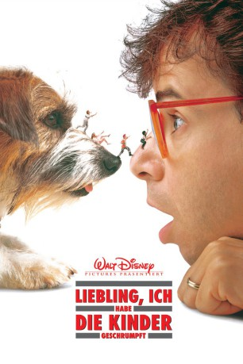
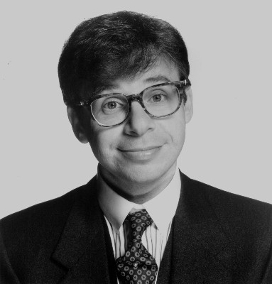
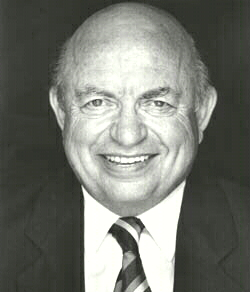

#4599 Liebling, ich habe die Kinder geschrumpft
Alternativ: Honey, I Shrunk the Kids
Auszeichnungen: 1 BAFTA-Awards gewonnen
 
 IMDB-Wertung: 6.3 / 10
IMDB-Wertung: 6.3 / 10  Metascore: 0
Metascore: 0 
Der Wissenschaftler Wayne Szalinski ist ein leidenschaftlicher Forscher, der auch ungewöhnliche Erfindungen schätzt. Sein neustes Werk ist eine Maschine, mit der sich Objekte auf Miniaturgröße schrumpfen lassen. Die Umgebung Szalinskis teilt den Enthusiasmus des Wissenschaftlers nicht, davon lässt er sich jedoch überhaupt nicht beeindrucken. Aber dann passiert ein unlückseliger Zwischenfall, der in Szalisnkis Planungen nicht vorgesehen war. Seine eigenen Kinder Amy und Nick sowie Ronald und Russell, die beiden Söhne seines Nachbarn Russell Thompson Sr., geraten in den Wirkungskreis der Maschine und werden zu Liliputanern. Jetzt müssen die Kinder zusammenhalten, um in der unwirtlichen Umgebung überleben zu können. Denn Grashalme wirken für sie wie Bäume und harmlose Insekten sind eine tödliche Gefahr. Vom Garten bis zum rettenden Haus ist es ein weiter Weg, aber die Kinder nehmen die Herausforderung an.
Jahr: 1989
Dauer: 89 Minuten
FSK: 6
Land: USA Studio: Buena Vista PicturesTonspuren: DD2.0 - ,
Untertitel:
Auflösung: 1080p (1920x1040) Größe: 4864 MB
Genre: Sci-Fi, Komödie, Abenteuer, Familie
Regisseur:  Joe Johnston
Joe Johnston
Drehbuch: Eliot Asinof
Soundtrack:
Darsteller:
-  Rick Moranis als Wayne Szalinski
 Matt Frewer als Big Russ Thompson
Matt Frewer als Big Russ Thompson- Marcia Strassman als Diane Szalinski
- Kristine Sutherland als Mae Thompson
- Thomas Wilson Brown als Little Russ Thompson
- Jared Rushton als Ron Thompson
- Amy O'Neill als Amy Szalinski
- Robert Oliveri als Nick Szalinski
- Carl Steven als Tommy Pervis
 Mark L. Taylor als Don Forrester
Mark L. Taylor als Don Forrester Kimmy Robertson als Gloria Forrester
Kimmy Robertson als Gloria Forrester-  Lou Cutell als Dr. Brainard
- Laura Waterbury als Female Cop
 Frank Welker als
Frank Welker als - Trevor Galtress als Male Cop
- Martin Aylett als Harold Boorstein
- Janet Sunderland als Lauren Boorstein
- Patrick Brown als (uncredited
Datei: X:\4-Tetralogie(A-K)\Geschrumpft\Liebling, ich habe die Kinder geschrumpft (1989, FSK6, 1920x1040).mkv seit 20.10.2016
Festplatte: HD Collection-3(N-Z)-6(A-Z)
 Es gibt insgesamt 7 Filme in der Gruppe '4-Tetralogie(A-K)\Geschrumpft'
Es gibt insgesamt 7 Filme in der Gruppe '4-Tetralogie(A-K)\Geschrumpft'